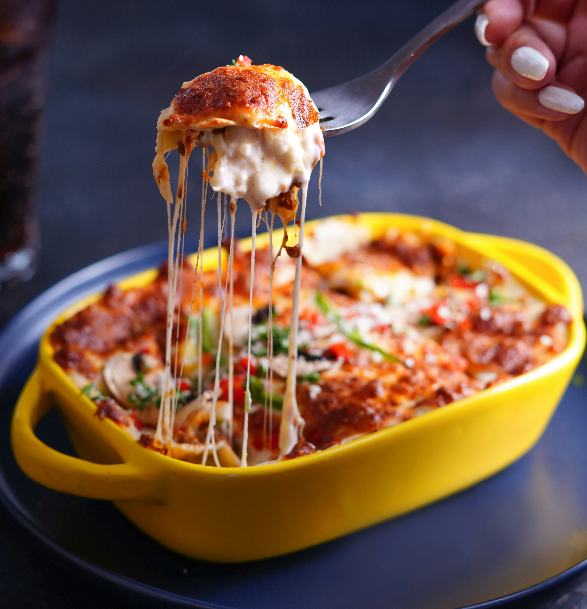

Lasagna
Home

Description
Lasagna is a classic Italian dish made by layering sheets of pasta with
rich meat sauce, creamy béchamel or ricotta cheese, and mozzarella, then
baking it until bubbly and golden. Known for its hearty, comforting
flavor, lasagna is a popular dish worldwide and often enjoyed at family
gatherings and special occasions.
Ingredients
- Lasagna noodles
- Ground beef (or Italian sausage)
- Onion
- Garlic
- Tomato sauce
- Ricotta cheese
- Egg
- Mozzarella cheese
- Parmesan cheese
- Salt
- Black pepper
Steps
-
Cook the noodles (if not using oven-ready ones), then drain and set
aside.
- Sauté chopped onion and garlic in a pan until soft.
-
.Add ground beef and cook until browned; season with salt and pepper.
-
Pour in tomato sauce, stir, and let simmer for about 15-20 minutes.
- In a bowl, mix ricotta cheese with the egg and a pinch of salt.
- Preheat the oven to 375°F (190°C).
-
Assemble the lasagna in a baking dish:
- Spread a layer of meat sauce at the bottom.
- Add a layer of noodles.
- Spread ricotta mixture on the noodles.
- Sprinkle mozzarella and a bit of Parmesan.
-
Repeat layers until ingredients are used, ending with cheese on top.
- Cover with foil and bake for 25 minutes.
-
Remove foil and bake uncovered for another 15-20 minutes until golden
and bubbly.
- Let it rest for 10-15 minutes before serving.